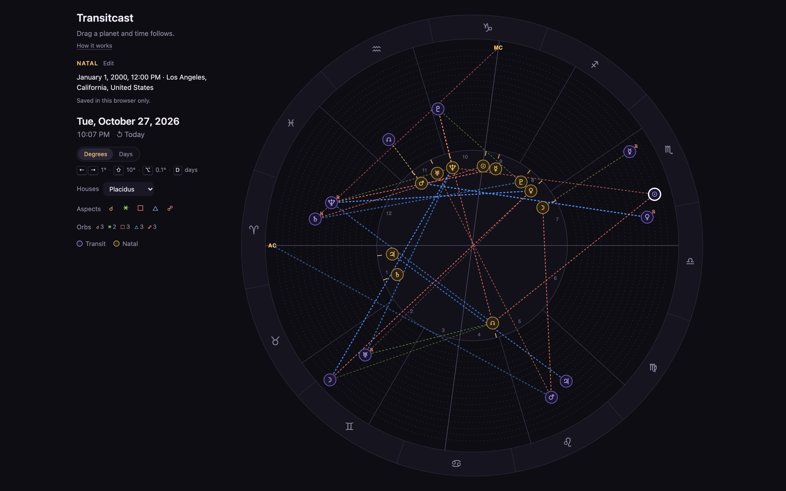
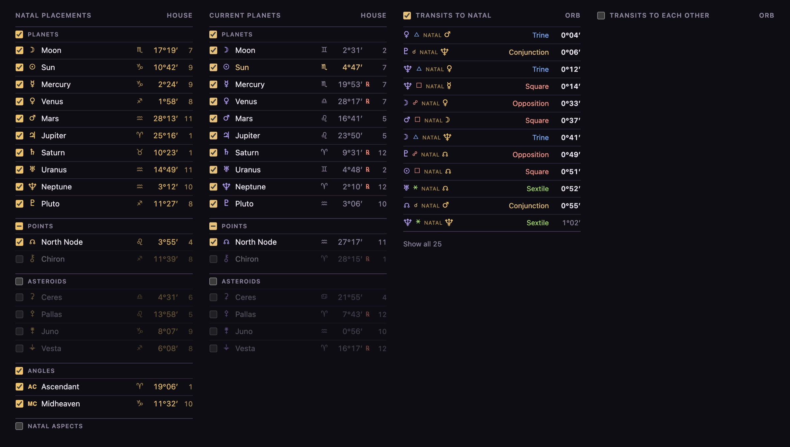
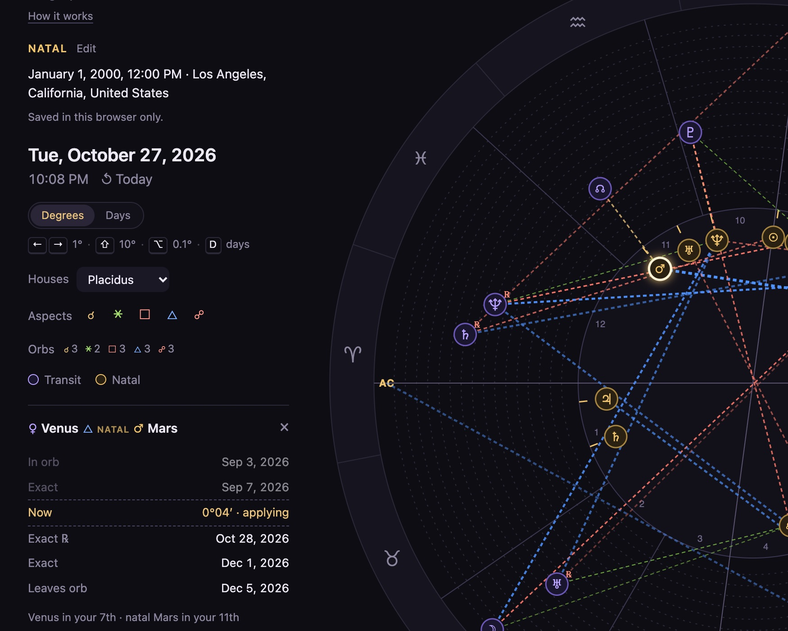

Transitcast
A chart wheel where dragging any planet scrubs time. Every other planet moves with it, and aspects to your birth chart light up as they form.

Transits in violet over a sample birth chart in gold. Dashed lines are aspects within orb.
- Problem
- Transit tools are tables and date fields. To see when Saturn reaches your Moon, you search, scroll and cross-reference.
- Opportunity
- Make time the thing you drag. Each planet is a dial at its own speed: the Moon scrubs hours, Saturn scrubs decades.
- Result
- A live tool with 16 bodies, aspects to your birth chart, and the full timing of any transit, on desktop and phone, built in two days.
I've wanted this tool for years, and I know my own chart well.
I started with a prototype instead of research, because the open question was whether dragging time feels right.
I was the first user, and every change came from friction I hit while using it.
The first version drove time at each planet's average speed, with a ghost marker and a snap on release.
Real planets speed up, stall and turn retrograde, so the planet drifted away from the cursor, and the snap confused me.
I switched to follow drag: the planet stays under your hand, and time jumps to wherever that is, even across a retrograde loop.
Follow drag: the planet stays under the cursor while the date jumps to match.
Planets come from an astronomy library, and the asteroids from NASA JPL tables.
I checked the asteroids against JPL at 2,248 dates between 1960 and 2040, with a worst error of 20 arcseconds, and the lunar node to within 0.01°.
Astrologers check the numbers first, so I verified them before anyone else had to.
With 16 bodies, the wheel got loud.
Fixed rings, group toggles, aspect filters, adjustable orbs and a focus mode let you decide what's on screen.
Hovering an aspect lights its two planets, so you can find the right one inside a stellium.

Group checkboxes decide what's on the wheel; transits to the natal chart are sorted by how close they are to exact.
Click any aspect to see when it enters orb, each exact hit including retrograde passes, and when it leaves.
Every date in the panel jumps the chart to that moment.

One transit, three exact hits: Venus trine natal Mars, including the retrograde pass.
It shows when a transit happens, not what it means, and that's deliberate.
Interpretation is the astrologer's craft, so the tool gives exact timing and leaves the reading to them.
The first tester's note was to make the tables easier to scan, so that's the next fix, and later sessions will decide what follows.
A live tool that turns transit lookups into a gesture.
- React
- Interaction Design
- Ephemeris Data
- Live Prototype